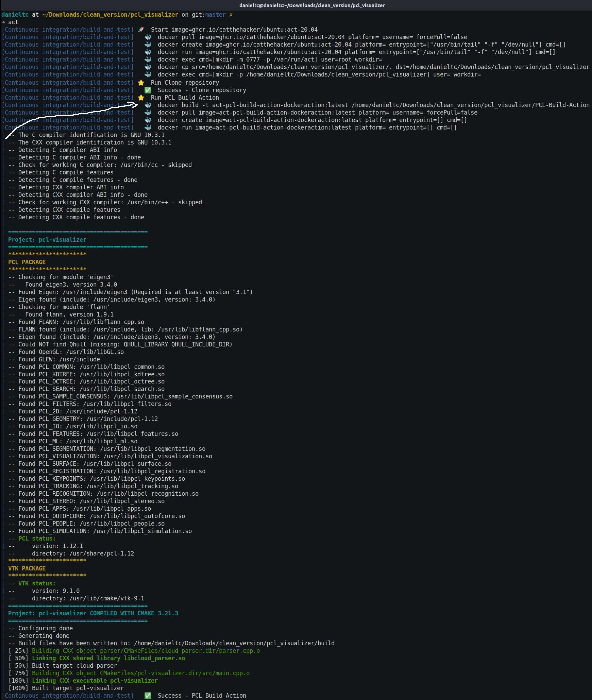
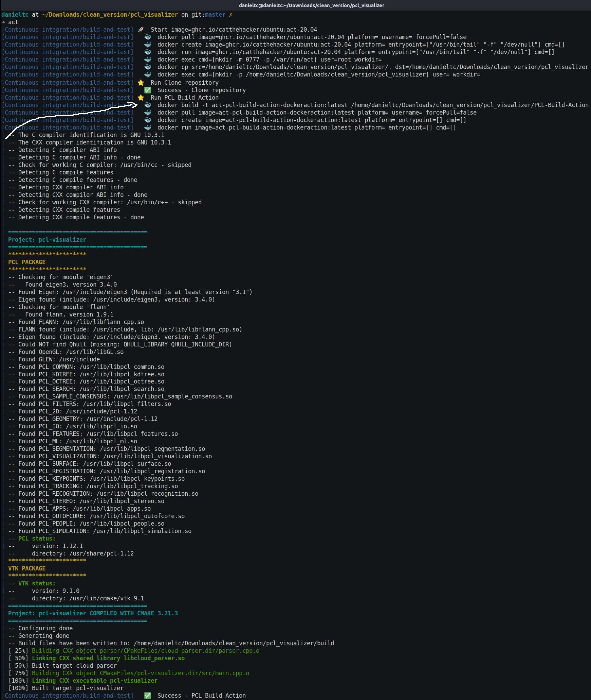

Custom GitHub Actions
{kind=link}

Automate, customize, and execute your software development workflows right in your repository with GitHub Actions
Custom Github Action
Actions are individual tasks that you can combine to create jobs and customize your workflow. You can create your own actions, or use and customize actions shared by the GitHub community
For this example, I will create a PCL-Build-Action in docker to compile pcl-cmake base projects. See Types of actions for other types.
- Create a Github Repository called: PCL-Build-Action
- Create an
action.ymlfile - Create a Dockerfile
- Create an
entrypoint.shfile - Create a
README.md - Save, commit and push the changes to the
PCL-Build-Actionrepository - [Optional] deploy the custom github action to the Marketplace
How Does It Work?
A github action is a github repository with a .yml manifest. This action will compile a CMake project using a Docker container
yml manifest
Actions require a metadata file to define the inputs, outputs and main entrypoint for your action. The metadata filename must be either action.yml or action.yaml. For more information, see "Metadata syntax for GitHub Actions."The first 3 lines ('name', 'description', 'author') are the metadata for this custom action. The name must be unique since there might be another github action in the marketplace with the same name.
In this example, I have defined one input called: build_type which is passed to the Docker container as environment variable in the entrypoint.sh file.
The 'runs' section defined the type of action to be executed. In this example, I am telling to Github to use a 'docker' action with a public docker hub image called: docker://danieltobon43/pcl-docker:1.12.1-alpine3.15-All-GA-v1.
PCL-Build-Action repository, but be aware that every time a new job is executed, an image from the Dockerfile will be compiled (this will cause increasing times in the job execution + possible billing fees from Github).
The last section is 'branding', which correspond to the logo and colour for the Github Action Marketplace. See "github-action-branding"
Dockerfile
This file will be the action to be executed. In this example, the 'Dockefile' will create an image that executes an 'entrypoint.sh' file. The 'danieltobon43/pcl-docker:1.12.1-alpine3.15-All-dev' is the base image to be used where all pcl dependencies such us 'VTK', 'OpenG'L, 'Boost', 'Flann', 'Eigen' are compiled.entrypoint.sh
This file is the main entrypoint to the Docker container. Will run the cmake commands to compile the project and read any 'INPUT_ARG' provided in the 'yml manifest' as an environment variable. This will similar to have: Every input defined in the yml manifest must be prefixed withINPUT_ in the main 'entrypoint.sh' file, otherwise won't be recognized.
README
This file will be the description of the custom action in the marketplace. In this document you explain the usage of your custom action.Running Dockerfile in custom action locally
The Dockerfile defined in the custom action can be executed locally using nektos/act. You can download the PCL Build Action repository and run the 'act' command. You will need to modify the 'yml manifest' (action.yml) in the 'PCL Build Action' repository folder to use "Dockerfile" instead. The project structure to run the custom github action using the Dockerfile locally is the following:More information about colored ls output see https://github.com/athityakumar/colorls
 In this example, I have a 'pcl-visualizer' repository where I have a '.github/workflow/ci.yml' file with the following content.
This ci.yml is instructing Github to use the local PCL-Build-Action repository to run the action.

Note: The image above has a wrong project path. It is actually: 'danieltc at ~/Downloads/project'
In this example, I have a 'pcl-visualizer' repository where I have a '.github/workflow/ci.yml' file with the following content.
This ci.yml is instructing Github to use the local PCL-Build-Action repository to run the action.

Note: The image above has a wrong project path. It is actually: 'danieltc at ~/Downloads/project'
Deploy to Marketplace
You can deploy your custom github action to the marketplace You will need to tag your repository and then, release the action to the marketplace.
You will need to tag your repository and then, release the action to the marketplace.